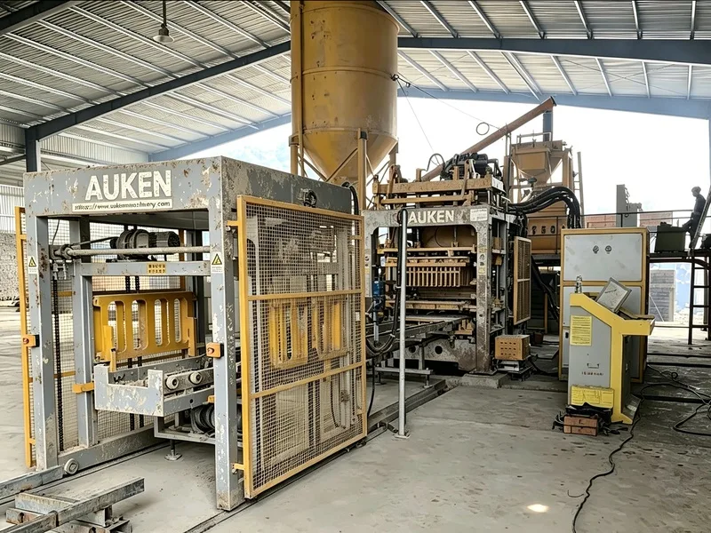
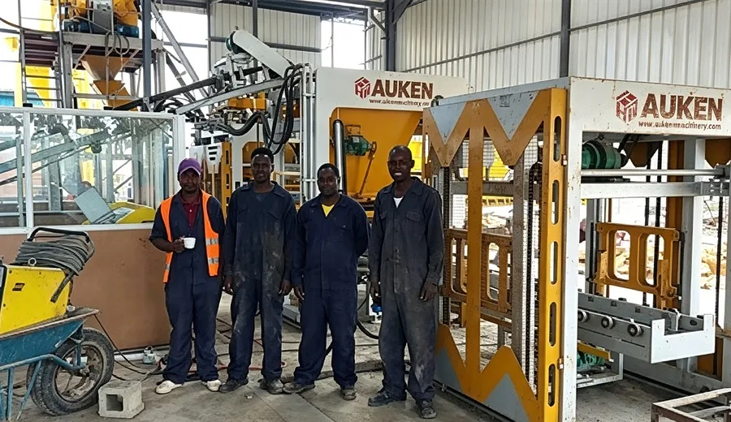
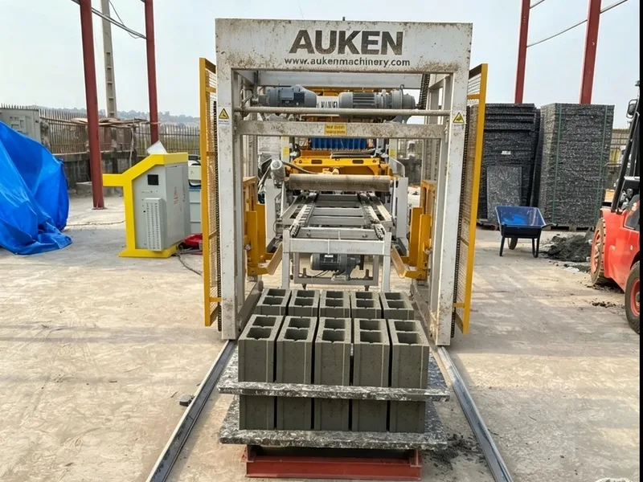
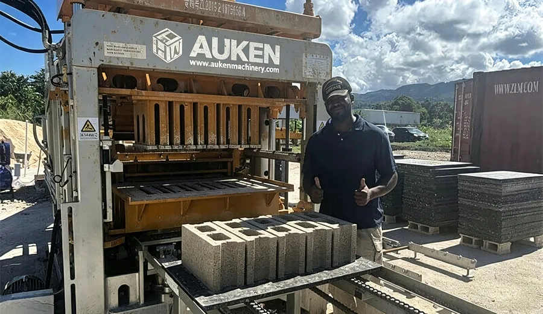
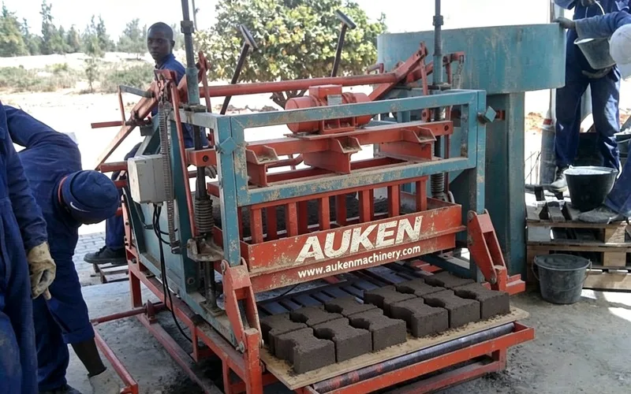
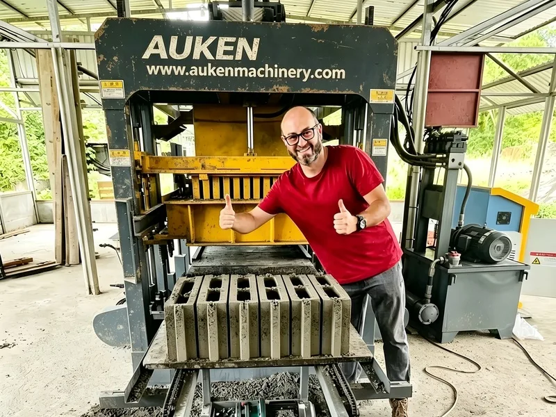
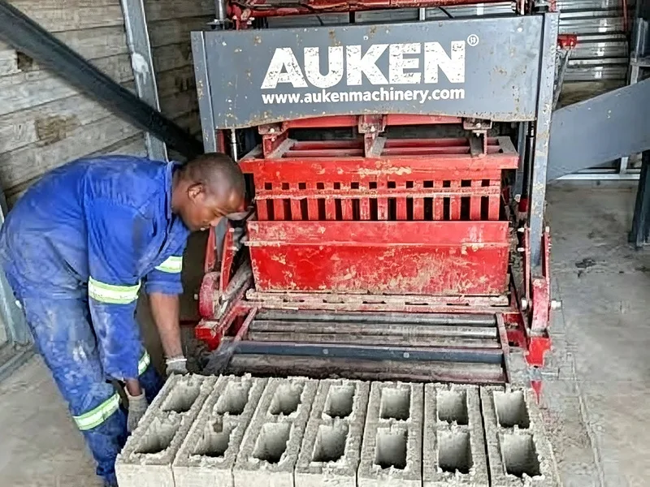

几内亚・建材加工厂
几内亚客户配置 QT‑6‑15 全自动制砖生产线，自动送板、自动出砖，稳定产出标准空心砌块，设备适配当地砂石原料，产品主要用于商铺、民房墙体施工，生产运行稳定。
从尼日利亚到坦桑尼亚，奥肯设备正服务于非洲各地的砖厂与建材商。以下为客户落地案例。

几内亚客户配置 QT‑6‑15 全自动制砖生产线，自动送板、自动出砖，稳定产出标准空心砌块，设备适配当地砂石原料，产品主要用于商铺、民房墙体施工，生产运行稳定。

内罗毕客户以 QT-4-15 全自动线起步，配套配料机与搅拌机形成整线，产品用于周边围墙与商铺建设，运行半年产能与合格率均达到预期。

海地客户采购 QT‑5‑15 全自动液压砖机，高压成型生产混凝土空心砌块，设备耐用抗环境工况，产品供给当地灾后重建与民居建造，客户对设备成型质量十分认可。

阿克拉客户选用 QT‑5‑15 全自动生产线，配套简易配料搅拌系统，实现自动送板、自动出砖。日产空心砌块约 10000 块，主要供应当地住宅、商铺墙体施工，设备维护简单，适合西非中小型砖厂投产。

达累斯萨拉姆客户选择半自动成型机搭配上板机与输送机的组合方案，投入小、回本快，适合刚起步的建材加工坊，目前已计划追加第二条产线。

哥伦比亚客户搭建 QT‑6‑15 全自动液压生产线，整套设备运行稳定，可生产空心砖、路沿砖等多类制品，规模化供货当地住宅、道路基建，设备适配南美当地供电工况。

杜阿拉客户上 QT‑7‑15 全套产线，包含搅拌、输送、出砖全套配套。占地面积适中，适合非洲中等规模建厂。砌块品质稳定，产品销往周边多个城市，帮助客户快速占领当地建材市场。